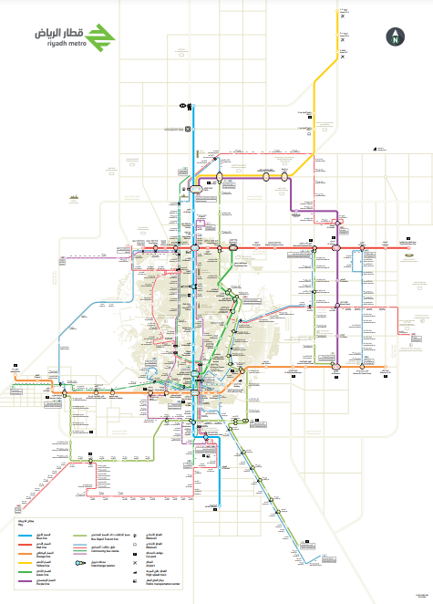

How to Reach SABIC Station:
- Accessible via the Yellow Line (Line 4) and the Purple Line (Line 6).
- Located on Uthman Bin Affan Road.
- Close to King Khalid International Airport and King Abdullah Financial District.
- Opening Time: 6:00 AM Closing Time: 12:00 AM (Midnight)
Student Discounts and Tickets:
- Students receive a 50% discount with a valid University ID card.
- Ticket Options:
- 2-hour pass: SAR 4
- 3-day pass: SAR 20
- 7-day pass: SAR 40
- 30-day pass: SAR 140
Station Maps:
SABIC Station Map

Riyadh Metro Full Map
Click to View PDF Map
Did You Know?
- Riyadh Metro will have 85 stations when fully operational!
- It will cover around 176 kilometers across Riyadh city.
- SABIC Station is especially important for Imam University students.